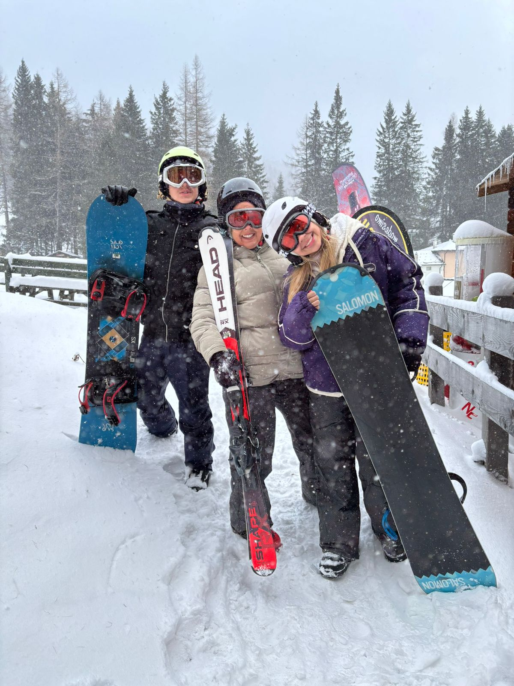
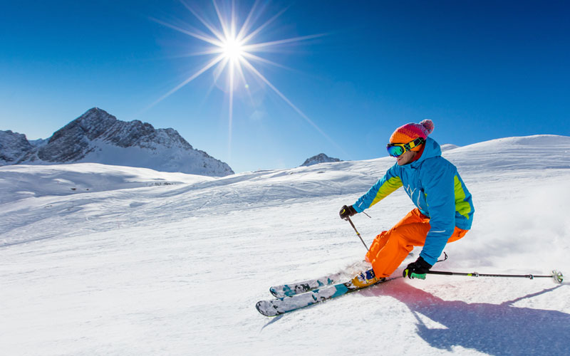

Esquiar é basicamente deslizar sobre a neve com dois esquis presos aos pés...parece simples, mas a sensação é única. Curiosamente, isso não começou como esporte: há milhares de anos, na Escandinávia, as pessoas usavam os esquis como um jeito prático de se locomover em regiões cobertas de neve.
Com o tempo, aquilo que era necessidade virou diversão e também competição. Hoje, o esqui é praticado no mundo todo, tanto por quem quer curtir a experiência quanto por atletas de alto nível, marcando presença em eventos como os Jogos Olímpicos de Inverno.
Chamado de sand skiing:
Locais como o Monte Etna permitem esquiar em neve com paisagens vulcânicas — uma experiência bem única.
Muitas estações oferecem pistas iluminadas:
Você é levado de helicóptero até o topo da montanha:
Se você nunca esquiou:

Se você gosta de aventura, natureza e um pouco de adrenalina, vale MUITO.